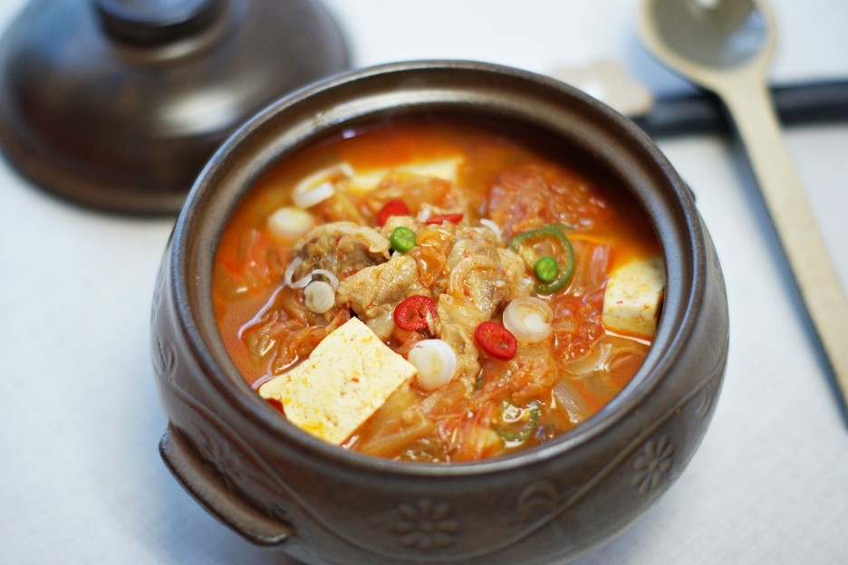

Kimch soup(김치찌개 in korean)
- introduction
- how to make
- video link
1.introduction
Kimchi stew is the most common home-cooked food.
You can experience this food no matter which city you go to in Korea.
Kimchi stew is enjoyed by all Koreans, from children to the elderly.
2.How to make
I added recipe on this section. You can find by clicking word
"Kimch soup"
(It was wrote by Korean)

3.Video link
If you cannot understand Korean you can follow directions by this video
this is Link address
"Video version of Kimch soup"